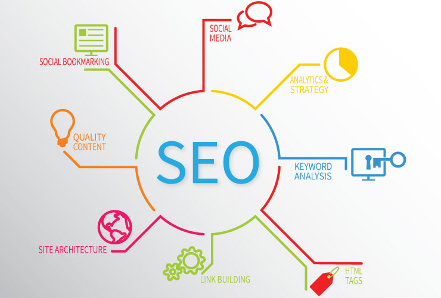
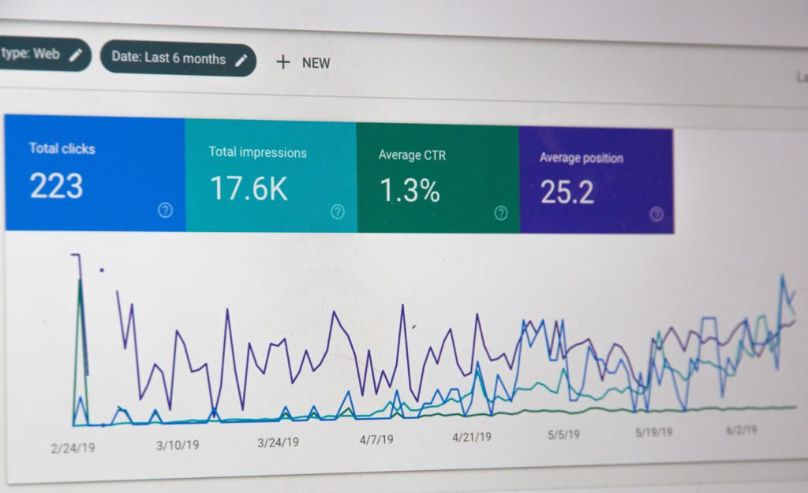
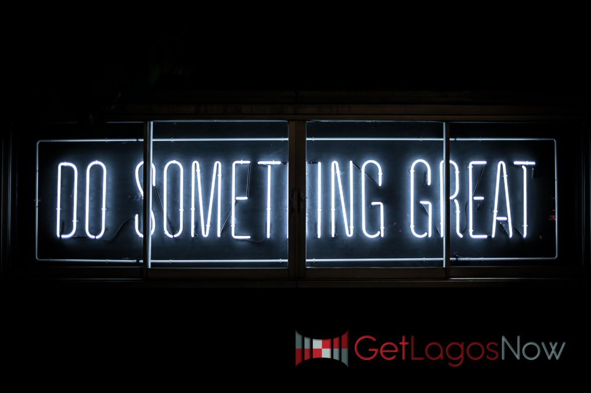
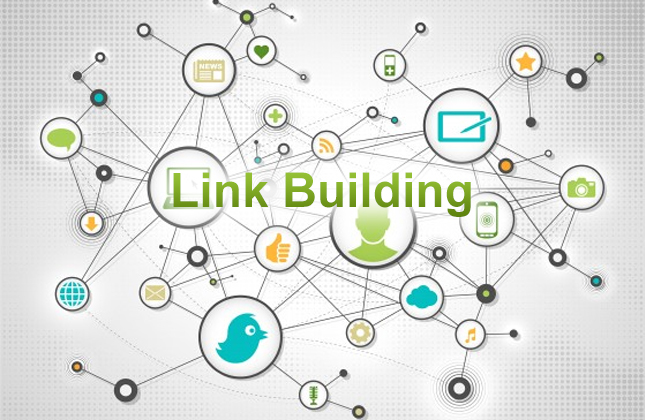

Writer – Michelle Lagos CEO
Yes, it’s time to look at your annual SEO needs in 2020 to set your optimization into the optimum. It’s always important to understand that Search Engines are constantly changing and the bag of SEO tricks you are using, that may have set forth effective results 1-2 years ago may, or may not be doing so now.
Step One: Review Performance Reports
Answer this:
1. How many new Hits occurred on the website during which months?
2. How many Page Views occurred monthly and where within the website? Are the viewers maneuvering through the website how you wanted and stayed in the areas preferred the longest?
3. How many conversions occurred?
4. What demographics interacted with your website?
5. How are your competitors performing and advertising?

Step Two: Preferred User Content
- Take a 360 look at the content used in your marketing and business. How is that content attracting your target markets?
- How are your social media platforms branded with content and visuals?
- What are you doing with your media and advertising campaigns?
- Understand who your audience is and how do they search.
- Understand the intent behind the questions they are asking or problems they need to solve.
- Give them solutions or answers in the formats they prefer via on-point, quality, and authoritative content.
- Execute in this fashion for every stage of their journey to create a satisfactory topical experience that serves their needs again and again.
- Every page should rank for a unique set of keywords.

Step Three: Show UP Strong
- Make sure you have/use a brick and mortar business location you can have signage in the window or in front of. Remember, shared spaces work! This will allow you to be placed into Google Maps with stronger ratings.
- Get Google testimonials and reviews!!!
- Send followup “Thank you” emails to clients and ask for that Google review, or an auto text that makes that ask.
- Have a digitally-based competitive advantage. Here’s some examples below:
- Supply chain excellence (e.g., delivering within 2-days (or less) with relevant status updates).
- Customer service (e.g., ability to answer the user’s question with minimal friction, 100% guaranteed).
- Digital charisma / branding (e.g., Having users seek you out, because they want to do business with you? Do most of your reviews look more like love letters? What was the Before and After like?)
- User experience (e.g., is your experience more convenient / useful / simple?).
- Price (How was it comparison to the value)?
- Niche products or services. (Do you have any).
- More marketers will leverage influencers for SEO.
- Consumers want the digital experience. Make more videos and digital animation clips.
Step Four: Technical SEO – Address the Foundation of The Website
- Do you have an SSL certificate for your website?
- Are all of the links working within your website?
- Are you keeping it updated?
- What is your site speed? New Chrome has “slow warning badges” and the speed reports in the Google Search Console.
- Build your website so it’s mobil first. 93% of the viewers are looking at your website through mobil. Make sure it’s optimized for the user-experience.

Step Five: Link Building & Brand Building
Focus on three types of writing and air it:
- Planned advertising/editorial: Topics that are covered by journalists every single year at a given point (e.g., Black Friday, Valentine’s Day).
- Planned reactive advertising/editorial: Features written on a topic that ties to a seasonal event or theme that we know is being covered due to time frame.
- Reactive advertising/editorial: Features written in the here and now that are unplanned and can’t be predicted and are dictated due to a news story breaking.
- Blog with links
- Yes, get the backlinks!
- Get into alignment with local companies and get showcased on their marketing and websites.
- You can’t be known for everything but what is your one speciality, in your area, that your LARGE competitors aren’t spending a LOT of money in Google ads to get attention doing? Target THAT and you will grow your audience and clientele, which will then find you a larger audience and more business you can advertise your services too. In the PNW – reputation and making relationships WIN!
- Build websites that will allow for optimization links and plugins that will allow the work to be in constant updating mode, as the search engines are doing the same.
- Let’s think about how you’re going to LINK, LINK, LINK.